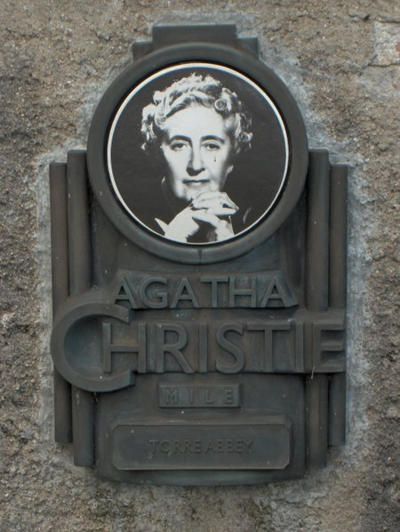
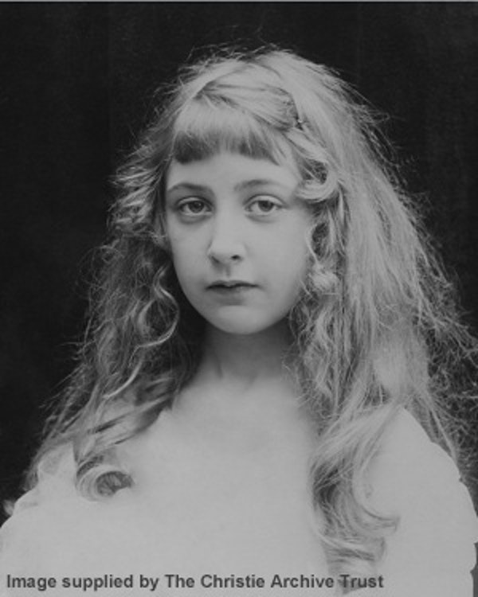
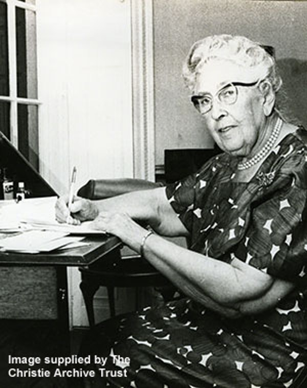

Agatha Mary Clarissa, cunoscută în general ca Agatha Christie, a fost o scriitoare engleză de romane, povestiri scurte și piese de teatru polițiste. A scris și romane de dragoste sub pseudonimul Mary Westmacott, dar acestea sunt mai puțin cunoscute, nebucurându-se de același succes la public. Operele sale, în principal cele ce au ca personaje principale pe Hercule Poirot sau Miss Jane Marple, au făcut ca Agatha Christie să fie numită „Regina Crimei”, ea fiind considerată ca unul dintre cei mai importanți și inovativi autori ai genului.
Agatha Christie a fost numită de către Guinness Book of World Records, printre alții, ca cel mai vândut scriitor al tuturor timpurilor, împreună cu William Shakespeare. UNESCO consideră că ea este actualmente autorul individual tradus în cele mai multe limbi (cel puțin 56), fiind depășită doar de operele colective ale corporației Walt Disney Productions.

Agatha Mary Clarissa Miller s-a născut la 15 septembrie 1890 în Torquay, Devon, Anglia de Sud-Vest, într-o familie de clasă mijlocie. Lucru neobișnuit pentru evoluția ei, chiar și pentru acea perioada, a fost că a fost școlită acasă în mare parte de tatăl ei, un american. Mama ei, Clara, care a fost o povestitoare excelentă, nu a vrut ca ea să învețe să citească până la opt ani, dar Agatha, plictisită și singura copilă de acasă (era un „gânditor” mult iubit cu doi frați mai mari) s-a învățat pe sine să citească până la vârsta de cinci ani.
În timpul Primului Război Mondial, Agatha a apelat la scrierea de povești cu detectivi. Romanul ei de debut "Mysterious Affair at Styles" a durat ceva timp pentru a fi terminat și chiar mai mult pentru a-și găsi un editor. A început să scrie parțial ca răspuns la un pariu cu sora sa, Madge, că nu poate scrie o poveste polițistă bună și parțial pentru a ușura monotonia muncii de distribuție pe care o făcea. (Când spitalul a deschis un dispensar, ea a acceptat o ofertă de a lucra acolo și a finalizat examinarea Societății Apotecarilor.) Mai întâi și-a elaborat complotul și apoi și-a „găsit” personajele într-un tramvai din Torquay. A terminat manuscrisul în timpul vacanței sale de două săptămâni pe care le-a petrecut la hotelul Moorland de la Haytor pe Dartmoor. Noua sa expertiză descoperită în otrăvuri a fost, de asemenea, folosită la maximum. Folosirea otrăvurilor de către criminal a fost atât de bine descrisă încât, în momentul publicării cărții, Agatha a primit o onoare fără precedent pentru un scriitor de ficțiune - o recenzie în "Pharmaceutical Journal".

Ulterior familia s-a reunit și s-au stabilit într-o casă pe care au numit-o Styles în suburbiile din afara Londrei. A fost o perioadă dificilă pentru Agatha - mama ei murise și deseori era singură, curățând casa familiei din Torquay și luptându-se să scrie următorul roman pentru Collins. Relația lui Archie și Agatha, tensionată de tristețea din viața ei, s-a stricat când Archie s-a îndrăgostit de un coleg de golf și prieten al familiei, Nancy Neale. Archie era un jucător de golf îndrăgostit, Agatha nu.
Una dintre ambițiile de-a lungul vieții lui Agatha fusese să călătorească pe Orient Express și prima ei călătorie a avut loc în toamna anului 1928. Convinsă de o discuție la întâmplare la o cină, Agatha a plecat la Bagdad și de acolo a călătorit la situl arheologic de la Ur unde s-a împrietenit cu soții Woolley, care conduceau săpăturile. Invitată înapoi în anul următor, l-a întâlnit pe arheologul în vârstă de douăzeci și cinci de ani, Max Mallowan, care urma să devină al doilea soț al Agathei. Solicitată de Katherine Woolley să îi arate Agathei site-urile, fiecare a găsit compania celuilalt relaxantă. Relația lor a fost forjată de călătorie - Max putea „s-o înăsprească” și la fel putea și Agatha. Max a cerut-o în căsătorie în ultima seară a vizitei sale la casa de familie a lui Agatha, Ashfield, s-au căsătorit la 11 septembrie 1930 la biserica St Cuthbert din Edinburgh, iar Agatha și-a redus ușor vârsta în noul ei pașaport dobândit pentru luna de miere. Max s-a întors la săpătura lui Woolley - pentru ultima dată singur - și Agatha la Londra și a scris. Astfel a început o rutină anuală de scriere și călătorie anuală productivă și recurentă pentru Agatha și Max: veri la Ashfield cu Rosalind, Crăciun cu familia surorii ei la Abney Hall, toamna târzie și primăvara la săpături și restul anului la Londra și la casa lor la țară în Winterbrook, la marginea Wallingford, Oxfordshire.

În cel de-al doilea război mondial, Max s-a angajat pe un post de război în Cairo - folosindu-și cunoștințele lingvistice pentru a sprijini efortul de război, în timp ce Agatha a rămas în Anglia, scriind și făcând voluntariat la dispensar la University College Hospital din Londra.
Odată cu anul 1945 și întoarcerea lui Max odată cu sfârșitul războiului, Agatha realizase enormele implicații fiscale ale scrisului. A devenit mai puțin prolifică și acum, la mijlocul anilor '50 se bucura de un ritm de viață mai lent, ca și restul țării. Ultimii ani ai anilor '40 au fost plini de lipsuri - un traseu lung, rece, deprimant. Raționarea alimentelor nu s-a încheiat decât în 1954.
Ultima apariție publică a lui Agatha a fost în seara de deschidere a versiunii filmului Murder on the Orient Express din 1974 cu Albert Finney în rolul lui Hercule Poirot. Verdictul ei: o bună adaptare cu mențiunea minoră că mustățile lui Poirot nu erau suficient de luxoase. După o carieră extrem de reușită și o viață foarte fericită, Agatha a murit în pace, pe 12 ianuarie 1976. Ea este înmormântată în curtea bisericii St Mary's, Cholsey, lângă Wallingford.
Datorită activității literare vaste a Agathei Christie, prezentarea completă a bibliografiei ei se poate regăsi pe linkul următor: Bibliografie Completă